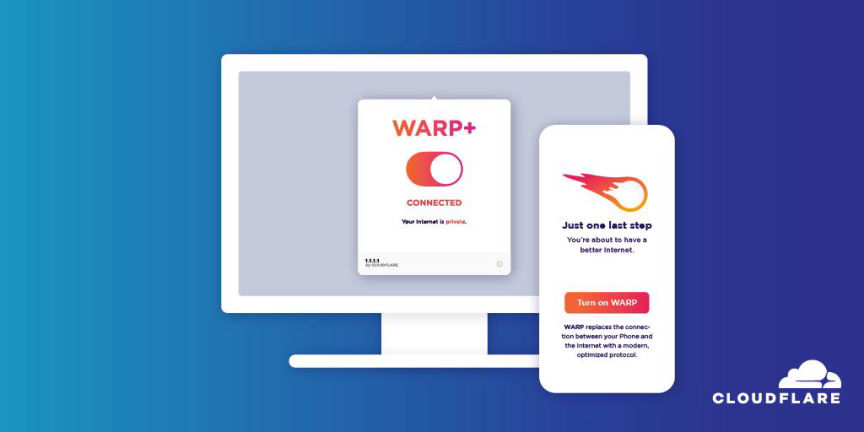
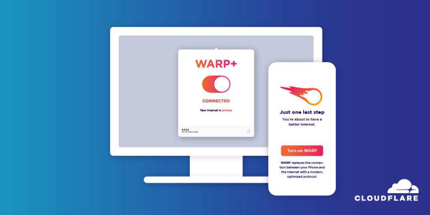

Cloudflare
[Hosting Provider]
Warp is an option within the 1.1.1.1 iOS and Android app to secure and speed up Internet connections.
Mirrors
- dns4torpnlfs2ifuz2s2yf3fc7rdmsbhm6rw75euj35pac6ap25zgqad.onion
PGP Keys
What Cloudflare says about Warp and 1.1.1.1:
Last April 1 we announced WARP — an option within the 1.1.1.1 iOS and Android app to secure and speed up Internet connections. Today, millions of users have secured their mobile Internet connections with WARP.
While WARP started as an option within the 1.1.1.1 app, it’ s really a technology that can benefit any device connected to the Internet. In fact, one of the most common requests we’ ve gotten over the last year is support for WARP for macOS and Windows. Today we’ re announcing exactly that: the start of the WARP beta for macOS and Windows.
What’ s The Same: Fast, Secure, and Free
We always wanted to build a WARP client for macOS and Windows. We started with mobile because it was the hardest challenge. And it turned out to be a lot harder than we anticipated. While we announced the beta of 1.1.1.1 with WARP on April 1, 2019 it took us until late September before we were able to open it up to general availability. We don’ t expect the wait for macOS and Windows WARP to be nearly as long.
The WARP client for macOS and Windows relies on the same fast, efficient Wireguard protocol to secure Internet connections and keep them safe from being spied on by your ISP. Also, just like WARP on the 1.1.1.1 mobile app, the basic service will be free on macOS and Windows.

WARP+ Gets You There Faster
We plan to add WARP+ support in the coming months to allow you to leverage Cloudflare’ s Argo network for even faster Internet performance. We will provide a plan option for existing WARP+ subscribers to add additional devices at a discount. In the meantime, existing WARP+ users will be among the first to be invited to try WARP for macOS and Windows. If you are a WARP+ subscriber, check your 1.1.1.1 app over the coming weeks for a link to an invitation to try the new WARP for macOS and Windows clients.
If you’ re not a WARP+ subscriber, you can add yourself to the waitlist by signing up on the page linked below. We’ ll email as soon as it’ s ready for you to try.
Linux Support
We haven’ t forgotten about Linux. About 10% of Cloudflare’ s employees run Linux on their desktops. As soon as we get the macOS and Windows clients out we’ ll turn our attention to building a WARP client for Linux.
Thank you to everyone who helped us make WARP fast, efficient, and reliable on mobile. It’ s incredible how far it’ s come over the last year. If you tried it early in the beta last year but aren’ t using it now, I encourage you to give it another try. We’ re looking forward to bringing WARP speed and security to even more devices.
Last April 1 we announced WARP — an option within the 1.1.1.1 iOS and Android app to secure and speed up Internet connections. Today, millions of users have secured their mobile Internet connections with WARP.
While WARP started as an option within the 1.1.1.1 app, it’ s really a technology that can benefit any device connected to the Internet. In fact, one of the most common requests we’ ve gotten over the last year is support for WARP for macOS and Windows. Today we’ re announcing exactly that: the start of the WARP beta for macOS and Windows.
What’ s The Same: Fast, Secure, and Free
We always wanted to build a WARP client for macOS and Windows. We started with mobile because it was the hardest challenge. And it turned out to be a lot harder than we anticipated. While we announced the beta of 1.1.1.1 with WARP on April 1, 2019 it took us until late September before we were able to open it up to general availability. We don’ t expect the wait for macOS and Windows WARP to be nearly as long.
The WARP client for macOS and Windows relies on the same fast, efficient Wireguard protocol to secure Internet connections and keep them safe from being spied on by your ISP. Also, just like WARP on the 1.1.1.1 mobile app, the basic service will be free on macOS and Windows.

Cloud Flare
WARP+ Gets You There Faster
We plan to add WARP+ support in the coming months to allow you to leverage Cloudflare’ s Argo network for even faster Internet performance. We will provide a plan option for existing WARP+ subscribers to add additional devices at a discount. In the meantime, existing WARP+ users will be among the first to be invited to try WARP for macOS and Windows. If you are a WARP+ subscriber, check your 1.1.1.1 app over the coming weeks for a link to an invitation to try the new WARP for macOS and Windows clients.
If you’ re not a WARP+ subscriber, you can add yourself to the waitlist by signing up on the page linked below. We’ ll email as soon as it’ s ready for you to try.
Linux Support
We haven’ t forgotten about Linux. About 10% of Cloudflare’ s employees run Linux on their desktops. As soon as we get the macOS and Windows clients out we’ ll turn our attention to building a WARP client for Linux.
Thank you to everyone who helped us make WARP fast, efficient, and reliable on mobile. It’ s incredible how far it’ s come over the last year. If you tried it early in the beta last year but aren’ t using it now, I encourage you to give it another try. We’ re looking forward to bringing WARP speed and security to even more devices.


matt2023-02-28
nice to know